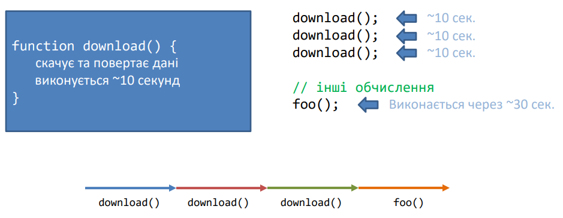
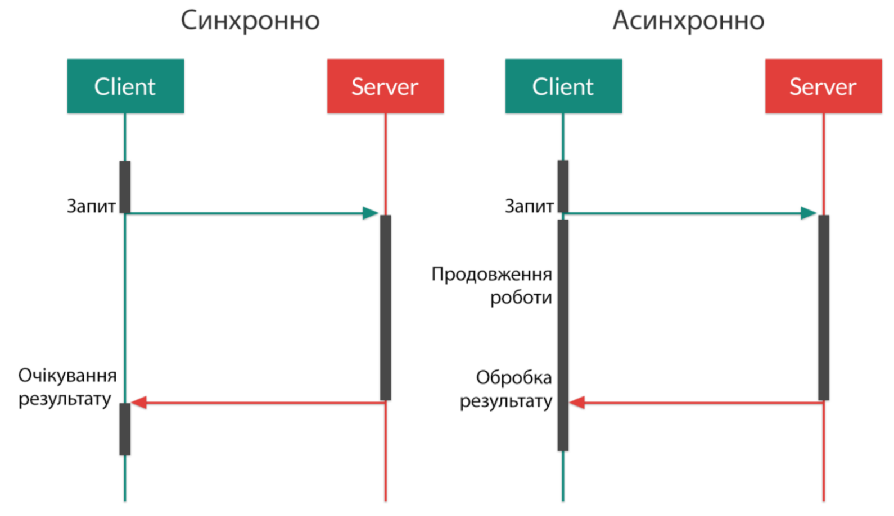
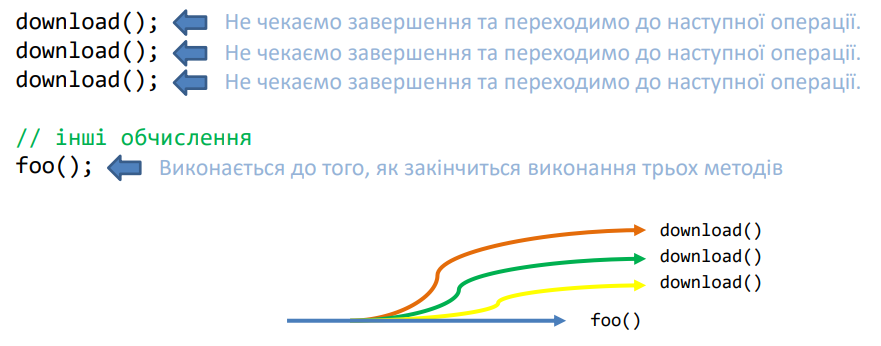

Синхронний код - код, що виконується послідовно, кожна операція очікує на завершення попередньої.
Синхронне виконання може призвести до наступних проблем:
Асинхронність — це процес обробки введення/виводу, що дозволяє продовжити обробку інших завдань, не чекаючи завершення попереднього завдання.
Асинхронний код – код, що виконується паралельно, а не послідовно. У більшості випадків асинхронне виконання коду передбачає виділення нових ресурсів для виконання асинхронних викликів - потоків.
Асинхронний код — код, в якому операції можуть виконуватися паралельно. Якщо операція запускається асинхронно, наступна операція може запуститися відразу після операції, запущеної асинхронно, але оскільки асинхронна операція виконується паралельно з іншими, необхідний спосіб обробити результат асинхронної операції у майбутньому.
Варіанти організації асинхронного коду:
function callback(result) {
...
}
download(callback);
let promise = download();
promise.then(callback);
let observable = download();
observable.subscribe(callback);
Callback (колбек, функція зворотного виклику) - функція, яка викликається у відповідь на вчинення деякої події.
Загалом, подією може бути що завгодно:Таким чином колбек - це перший спосіб обробити будь-яку асинхронну дію.
Однак у колбеків є неприємний мінус, так зване пекло колбеків (callback hell).
Навіть якщо вам не потрібно працювати з сервером, досить високі шанси зіткнутися з функціями зворотного виклику.
forEach, every, some, reduce, filter, або функції сортування sort, або методу addEventListener (другий параметр приймає функцію, яку буде викликано в разі настання події)
Аналогічно з установкою обробників подій. Щоразу, коли ви підписуєтеся на подію за допомогою addEventListener, через її другий параметр ви визначаєте функцію зворотного виклику, яка спрацює під час настання події. У світі JavaScript колбеки всюди.
Функція setTimeout() не є частиною JavaScript-движка, це по суті Web API, включене в середовище браузера як додаткова функціональність.
Ця додаткова функціональність (Web API) бере на себе роботу з таймерами, інтервалами, обробниками подій. Тобто коли ми реєструємо обробник кліка на кнопку - він потрапляє в оточення Web API. Саме воно знає, коли обробник потрібно викликати.
Управління тим, як мають викликатися функції Web API, бере на себе цикл подій (Event loop).
Цикл подій відповідає за виконання коду, збір та обробку подій і виконання підзадач із черги.
Зауважте, що стек викликів і черга завдань називаються саме стеком і чергою. Тому що виклики зі стека працюють за принципом "останній зайшов, перший вийшов" (LIFO: last in, first out), а в черзі - за принципом "перший зайшов, перший вийшов" (FIFO: first in, first out).
Черга - структура даних, у якій елементи впорядковані так, що перший елемент, який потрапив у чергу, залишає її першим.
Таким чином цикл подій працює з асинхронним кодом - тобто таким, що виконується не построково.
http://latentflip.com/loupe/ - інструмент Loupe Филипа Робертса
Приклад 001 - 007 з директорії js/1-19-asynchronous-code-promises/examples
Promise – об'єкт, який зберігає кінцевий результат асинхронної операції. Promise – є значенням, яке ще не існує. Daniel P. Friedman та David Wise запропонували термін Promise у 1976 році.
Можливі стани об'єкта promise:Promise, який перейшов у стан Fulfilled або Rejected, називається Settled
Для визначення дії, яка буде запускатися у випадку, якщо Promise перейшов в один із станів, використовується функція then(f1, f2) де f1 — функція зворотного виклику, яка спрацює, якщо проміс перейшов у стан Fulfilled, f2 — функція зворотного виклику, яка спрацює при переході у Rejected.
p.then(f, r)– якщо p у стані fulfilled функція f буде викликана.
p.then(f, r) – якщо p у стані rejected функція r буде викликана.
В інших випадках р у стані pending.
Приклад 008 з директорії js/1-19-asynchronous-code-promises/examples
Недоліком організації асинхронного коду через callback функції — необхідність використовувати додаткові параметри для всіх асинхронних операцій та складність управління певних послідовностей виклику асинхронних операцій через необхідність створювати вкладені функції зворотного виклику та погіршувати читабельність коду.
При використанні промісів можна будувати ланцюжки промісів. Немає потреби організовувати вкладеність коду, що полегшує розуміння асинхронного коду.
Приклад 009 - 012 з директорії js/1-19-asynchronous-code-promises/examples
Приклад 010 - 012 з директорії js/1-19-asynchronous-code-promises/examples
Promise.all(масив) — метод, який дозволяє дочекатися завершення всіх промісів, вказаних у параметрі та виконати дію після них.
Promise.race(масив) — метод, який дочекається завершення одного з промісів, вказаних у масиві та проігнорує інші.
Promise.allSettled(масив) — очікується, коли всі проміси отримають стан і повертає новий проміс, який як параметр отримує масив з даними про стани та значення settled промісів.
Приклад 013 з директорії js/1-19-asynchronous-code-promises/examples
Проміси виявилися зручними, і з'явився навіть такий термін як "промісифікація" - коли асинхронну функціональність на колбеках перетворювали на проміси.
У них є кілька недоліків:Для вирішення цих проблем придумали асинхронні функції, які повертають проміси. Існує спеціальний синтаксис для більш зручної роботи з промісами, який називається “async/await”..
Асинхронна функція позначається спеціальним ключовим словом async.
У середині асинхронних функцій можна викликати інші асинхронні функції, без будь-яких then() або колбеків, за допомогою ключового слова await.
Додане перед визначенням функції ключове слово async робить функцію асинхронною. Повернуте значення такої функції автоматично обертається в Promise
Асинхронні функції потрібні для виконання асинхронних операцій: роботи з API, базами даних, читання файлів тощо.
Асинхронні операції виконуються не одразу: код надіслав запит до API і чекає, поки сервер надішле відповідь. Ключове слово await використовується, щоб дочекатися виконання асинхронної операції.
Приклад 014, 015 з директорії js/1-19-asynchronous-code-promises/examples